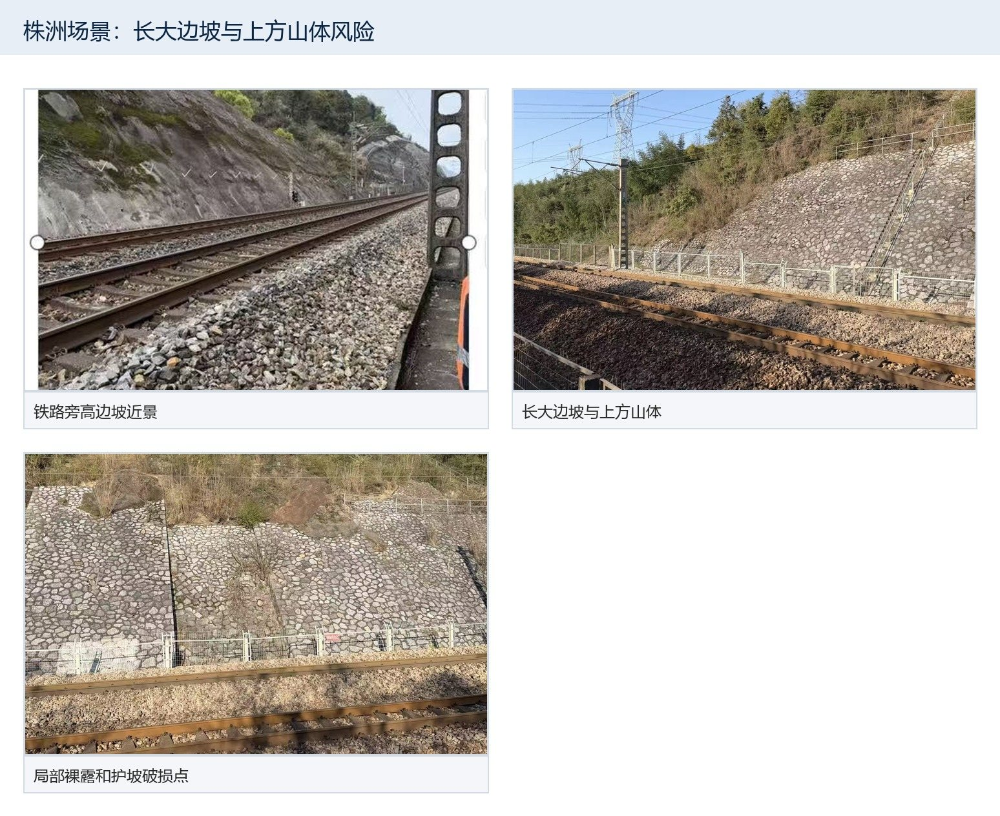
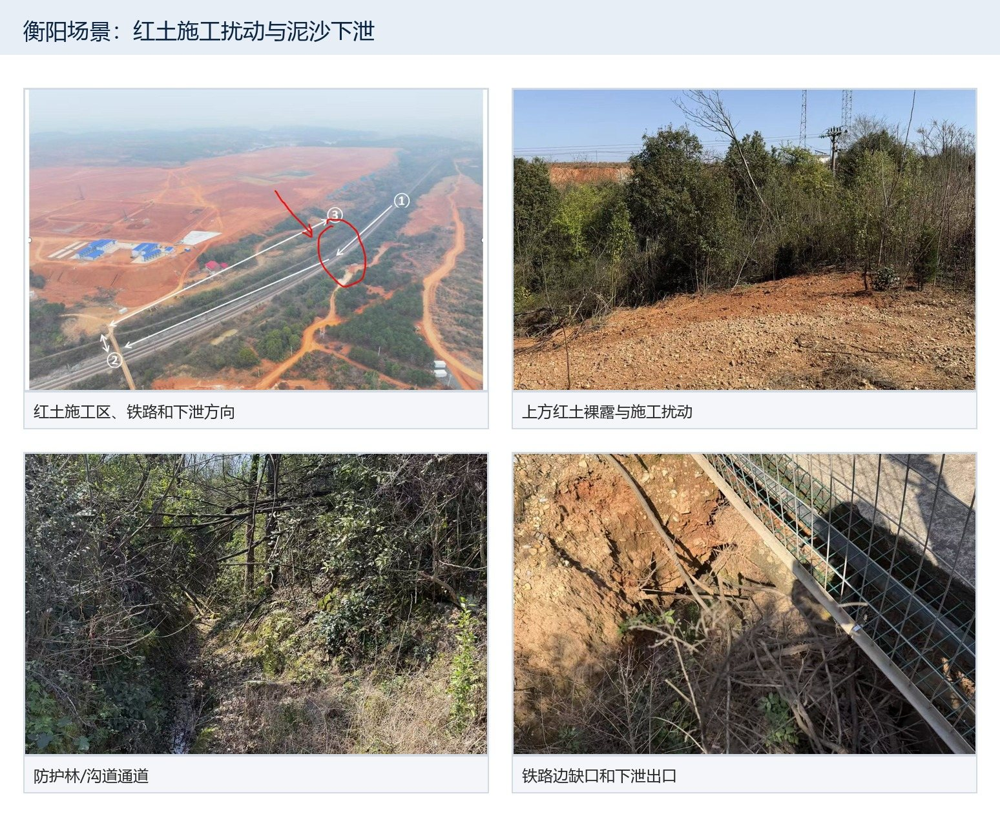
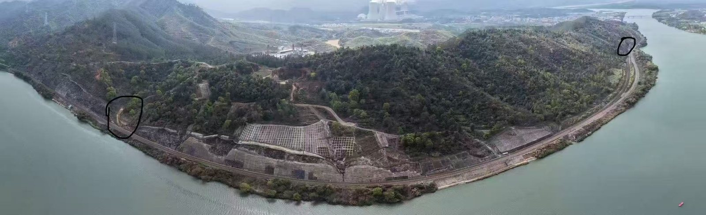

项目背景：三个测点
大约 10 分钟。读完你会知道：三个测点是什么样的地方，这三个点一共要做哪些研究，我们这一步做什么，以及要看多少期影像。
1三个测点的情况
三个测点都在京广线上，是铁路方关心的重点地段：铁路贴着山坡，上方的山体一旦出现裸露、开挖、滑塌，下雨时就可能影响线路。卫星能每隔几天把整片山拍一遍，正好用来补充人工巡检和无人机看不到或飞不了的地方。



2三个测点一共要做哪些事
围绕这三个点，项目要用卫星影像回答四个问题：
地面是什么
把影像上的每一块认出来：水、植被、耕地、裸土、建筑。这部分已经做过一轮，有 99 期人工标注的样本。
把影像上的每一块认出来：水、植被、耕地、裸土、建筑。这部分已经做过一轮，有 99 期人工标注的样本。
哪里变了
比较前后两期，找出地面真正发生变化的地方，比如新开挖、新修路、新盖房、山坡植被被清掉。
比较前后两期，找出地面真正发生变化的地方，比如新开挖、新修路、新盖房、山坡植被被清掉。
变化是不是真的
云、雾、阴影、河面反光会让影像看起来变了，其实地面没变。要把这些“假变化”和真变化分开。
云、雾、阴影、河面反光会让影像看起来变了，其实地面没变。要把这些“假变化”和真变化分开。
河边有没有变
株洲南、韶关南紧挨着河，还要看水面范围和河岸线的变化。
株洲南、韶关南紧挨着河，还要看水面范围和河岸线的变化。
之后会挑出重点位置，买更清楚的高分辨率影像来核实，再用整理好的样本训练电脑自动识别。这些都要有一个前提：先知道每一期、每个地方到底有没有变化。
3我们这一步做什么
我们要把三个测点的影像按时间一期一期看过去，每一期做两件事：
① 这一期能看清吗有云、雾、阴影、黑块的地方画框圈出来
›
② 和上一期比，有哪些明显不同把每一处不同画框，选是什么变化
›
组长复核确认、修改，整理成正式的变化样本
“哪里变了”靠第 ② 步，“变化是不是真的”靠第 ① 步记下的看不清的地方。所以两步都很重要：
- 看不清就说看不清，被挡住的地方不要猜。
- 拿不准也要记，选“有差别，但说不清是什么”，写一句你看到的样子。
- 季节变化也记，庄稼返青、收割都是真实的地面变化。
- 不用判断风险，现在只记“看到了什么”。
4一共有多少影像，第一期先做多少
我们手上有三个测点 2021 年 7 月到 2026 年 7 月的 Sentinel-2 卫星影像，一共 513 期，被云完全遮住的日期大多已经去掉了。第一期先做 2023—2024 年这两年，一共 176 期，做完再往前、往后扩展。
每个测点另有一张 2022 年最后一期的影像作为“第 0 期”，只判断能不能看清，用来和 2023 年的第一期比较。